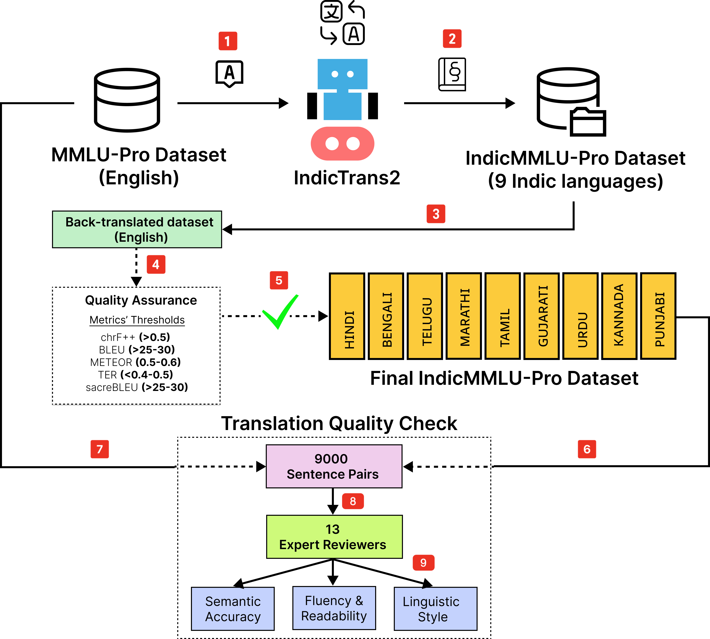

IndicMMLU-Pro
Benchmarking Indic Large Language Models on Multi-Task Language Understanding
Overview

IndicMMLU-Pro is a comprehensive benchmark designed to evaluate Large Language Models (LLMs) across Indic languages, building upon the MMLU Pro (Massive Multitask Language Understanding) framework. Covering major languages such as Hindi, Bengali, Gujarati, Marathi, Kannada, Punjabi, Tamil, Telugu, and Urdu, our benchmark addresses the unique challenges and opportunities presented by the linguistic diversity of the Indian subcontinent.
This benchmark encompasses a wide range of tasks in language comprehension, reasoning, and generation, meticulously crafted to capture the intricacies of Indian languages. IndicMMLU-Pro provides a standardized evaluation framework to push the research boundaries in Indic language AI, facilitating the development of more accurate, efficient, and culturally sensitive models.
Authors: Sankalp KJ, Ashutosh Kumar, Laxmaan Balaji, Nikunj Kotecha, Vinija Jain, Aman Chadha, Sreyoshi Bhaduri
Technologies Used
Features & Functionality
- Multilingual evaluation tasks
- Diverse domain coverage
- Comprehensive language support
- Standardized evaluation metrics
Challenges & Learnings
The main challenge was creating a balanced and representative dataset that captures the linguistic diversity and complexity of Indian languages while maintaining high quality and consistency.
The project provided valuable insights into multilingual evaluation methodologies and the importance of culturally-aware language understanding.